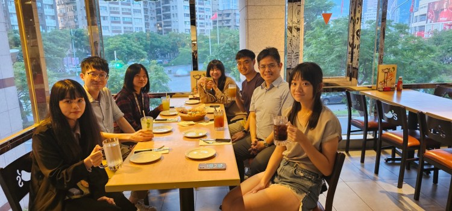

Assistant Professor, School of Medicine / Institute of Clinical Medicine
National Yang-Ming Chiao Tung University, Taiwan
Attending Physician, Department of Oncology / Comprehensive Breast Health Center
Taipei Veterans General Hospital, Taiwan
賴峻毅 醫師
Chi-Yi Lin
PhD Student, Institute of Clinical Medicine
Jason Yu
Master Student, Institute of Clinical Medicine
Yi-Hsin Ni
PhD Student, Institute of Clinical Medicine
Wei-Ting Chung
Master Student, Institute of Clinical Medicine
Yang Yang Tsai
Medical Student, School of Medicine
Yi-Ru Tseng
Research Associate
Rainie Wu
Administrative Assistant
